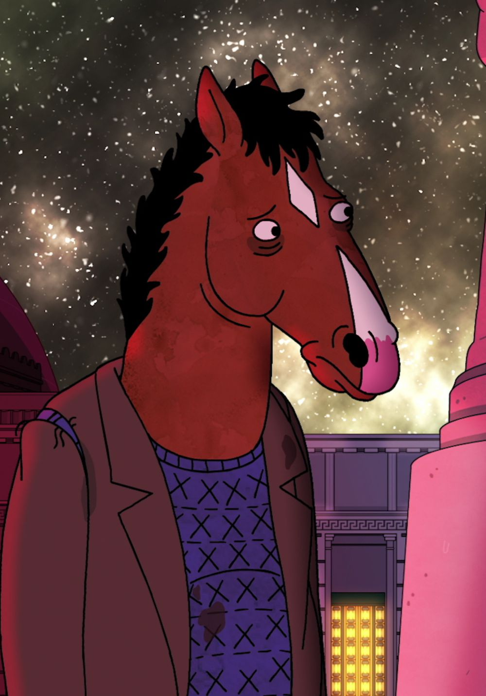
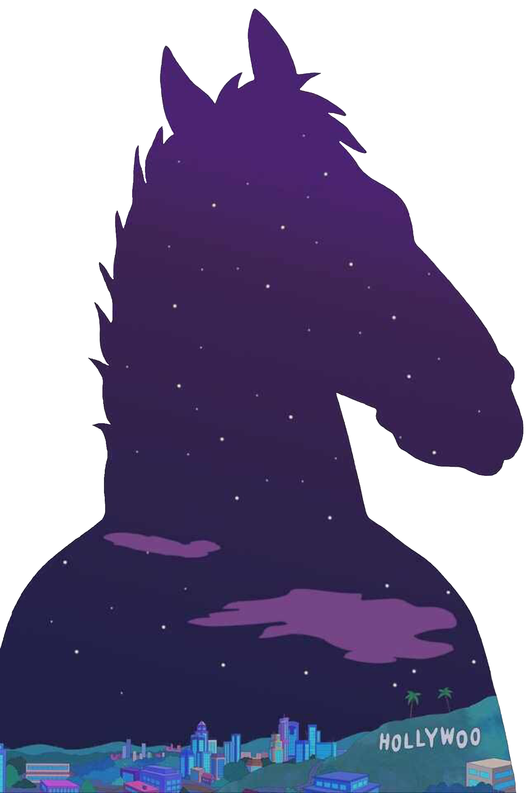
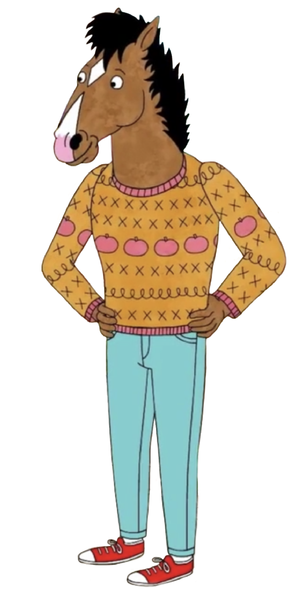

BoJack Horseman
 "You know, sometimes I think I was born with a leak, and any goodness I started with just slowly spilled out of me and now it's all gone. And I'll never get it back in me. It's too late. Life is a series of closing doors, isn't it?" - BoJack
BoJack F. Horseman is the eponymous character of BoJack Horseman. The show primarily follows BoJack and his life after his successful '90s sitcom, Horsin' Around.
Physical appearance
BoJack is an adult, male, grade/thoroughbred cross horse weighing over 1,200 pounds as revealed in the pilot episode. He is around 6'7" feet (15.2 hands at the withers, 19.75 at the ears) tall. He has brown (medium bay) fur and a black mane, with a white snippet on his snout that begins at his upper lip and ends underneath his eyes, a white diamond-shaped mark on his forehead, and a pink spot on his nose. Despite being a horse, BoJack, like other animals in the BoJack Horseman series, has a humanoid body, and is designed with human feet and hands and does he not have a tail.
Personality
A curmudgeon described by his ex-girlfriend as a "self-pitying masochist," BoJack Horseman is bitter, depressed, self-loathing, narcissistic, and self-destructive.
BoJack is often bad-tempered and irritable, with little patience for a lot of people around him (notably Mr. Peanutbutter or Todd), who although give BoJack plenty of attention, are constantly insulted and looked down upon by BoJack's very bitter nature.
Although being annoyed by his surroundings, BoJack ironically has a nasty habit of driving some of his closest friends like Princess Carolyn to distraction. Most commonly through his numerous schemes to get his own way, which usually ends up in a disaster.
Despite these struggles and insecurities that he has, BoJack does care about others, such as his friends, can even be insightful, doesn't really want to hurt anybody, and has proven to be more tender-hearted than he appears to be.
BoJack is plagued by his utter self-loathing and struggle to accept himself, this depressed side of his nature often comes out when he is with Diane. However, his sentimental moods have been more common recently, even with people like Mr. Peanutbutter, most notably in Season 2.
In addition, BoJack finds himself haunted by his past, on a regular basis, flashbacks are often seen of BoJack remembering his corrupted relationships—especially his mother and ex-best friend.
While he can seem hostile on the outside, BoJack does have a caring, melancholic side to him, but rarely shows this side of himself to others—partly because of his insecurities to show any weakness others. Fearing that others will catch on that he dislikes himself, he feigns narcissistic behavior. Some examples of this are claiming to have sex as he sees footage of himself and masturbating to his own image.
As a foal, he was inquisitive and keen to earn his father's trust, making him a card which his father referred to as "shoddy craftsmanship."
As a younger horse, he was polite, cheerful, charming but also a lightweight, who consciously avoided all alcohol, in stark contrast to his current boozehound self. His attitude only soured after his Horsin' Around fame, as it didn’t really make him happier, and he became more cynical and depressed.
Background
Born on January 2nd, 1964, BoJack F. Horseman was born and raised in San Francisco, California, and grew up in an abusive and dysfunctional family.
His mother, Beatrice Horseman, was a housewife, formerly a socialite, and the heiress of the Sugarman Sugar Cube Company fortune, while his father Butterscotch Horseman was a failed novelist from a working-class background.
Butterscotch, resented his wife's wealthy upbringing, and initially worked at a fish cannery for low income due to his spite for the upper class until BoJack was six. After that, he begrudgingly took a well-paying job for Beatrice's father's company at his wife's insistence.
Butterscotch was an alcoholic and regularly verbally abused, and sometimes even physically abused, BoJack while he was young. He was also often seen yelling nonsensical ultra-conservative hyperbole, usually to cover up his failures, and "easy comings" in the world, typically blaming it on Democrats, Jews, or Communists. He would also regularly flirt with and commit adultery with various women. He typically avoided his son and wife by secluding himself in his study to drink and chip away at his pipe dream novel, or stay at work late, where he would commonly have affairs, including his secretary.
His mother, Beatrice, was also an alcoholic and a heavy smoker, and resented and hated BoJack for everything he had "done" to her, including being born, saying that she was beautiful before she got pregnant. To her, BoJack was a reminder of all of her bad decisions, and her own traumatic childhood did not help this fact. She and Butterscotch would also constantly get into loud arguments right in front of their child.
Her smoking habits, forceful will, addictions, and constant bickering with Butterscotch made BoJack's formative years difficult and eventually shaped how he turned out as a grownup.
This includes BoJack’s eventual alcoholism, with him having a drink of alcohol when he was just a small child after finding his parents fast asleep from drinking at a house party, in order to be able to cuddle up to his mother and fall asleep—a rare instance where his young self would be able to show her affection. Additionally, due to him being able to swallow it with little problem, it’s hinted he had the taste of alcohol when he was even younger.